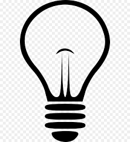

was an American inventor and businessman who has been described as America's greatest inventor. He developed many devices in fields such as electric power generation, mass communication, sound recording, and motion pictures. These inventions, which include the phonograph, the motion picture camera, and early versions of the electric light bulb, have had a widespread impact on the modern industrialized world. He was one of the first inventors to apply the principles of organized science and teamwork to the process of invention, working with many researchers and employees.
